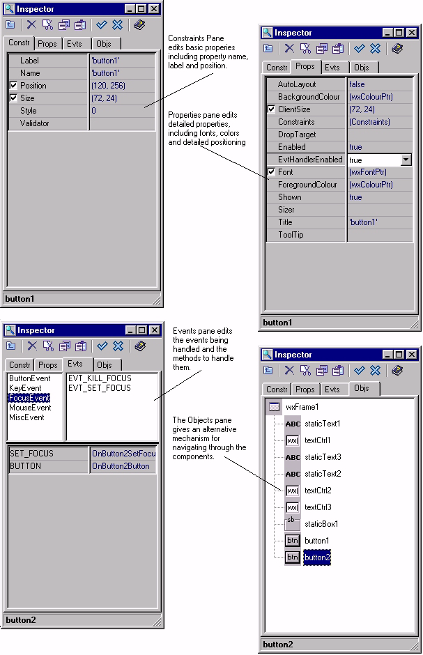
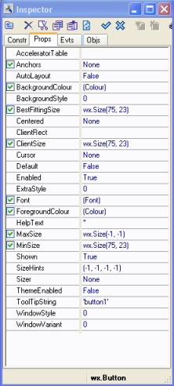
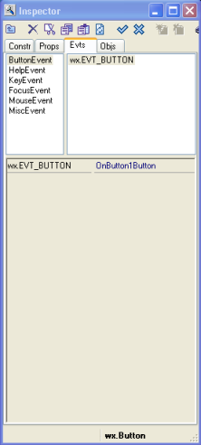
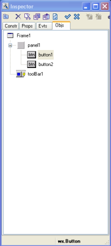

| Getting Started Guide for Boa Constructor |
| Getting Started Guide for Boa Constructor |
|  | The
Constructor page
allows you to edit properties which are
required at object construction time, e.g. the name and style of the
component. Look at the wxPython help for the values passed to the constructor for a control. The styles in the manual are of particular importance. Please note that changes to certain constructor parameters only take effect when the control is created. You should change the "Name" property to something which will make sense to someone else or to you in 3 month time! |
|  | The Properties page gives fine grained control to all properties for this component, e.g. fonts and colours. |
|  | The
Events page allows
you to select the events which you
wish
to handle in your code. The events are grouped into logical groups. Creating an event is easy, just click on e.g. "ButtonEvent" and click on "wx.EVT_BUTTON" and Boa will create an "OnButton" event called "OnControlNameButton", obviously you will need to add to the generated source what actions you want to take when a user presses this button. |
|  | The Objects page allows you to navigate through your components in an alternative format to the Designer pane. This is particularily useful if you have invisible or overlapping components. Also certain components like the wxStatusBar do not process click events (on MSW) so it has to be selected in the Objects page. |
| Getting Started Guide for Boa Constructor |